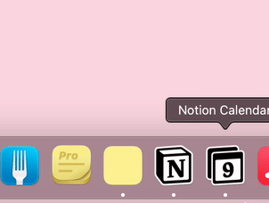
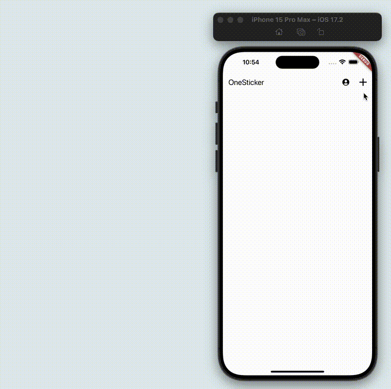

Creating sticky notes on your Mac is simple and doesn't require any additional software. Follow these easy steps to make and manage digital sticky notes using the built-in Stickies app.
1. Open Stickies App
Launch the Stickies application on your Mac. You can find it in your Applications folder or use Spotlight search (Command + Space) to quickly open it.
2. Create a New Sticky Note
Click on File > New Note or use the keyboard shortcut Command + N to create a new sticky note. Start typing your note immediately.

3. Customize Your Sticky Note
Personalize your sticky note by changing its color, font, or size. Use the Format menu to access these options and make your notes stand out.
4. Organize and Manage Your Notes
Arrange your sticky notes on the desktop, resize them, or use the Window menu to organize multiple notes. You can also save important notes as files for future reference.
With the built-in Stickies app, you can easily create, customize, and manage your sticky notes on Mac, helping you stay organized and never forget important information.
Explore More Mac Tips